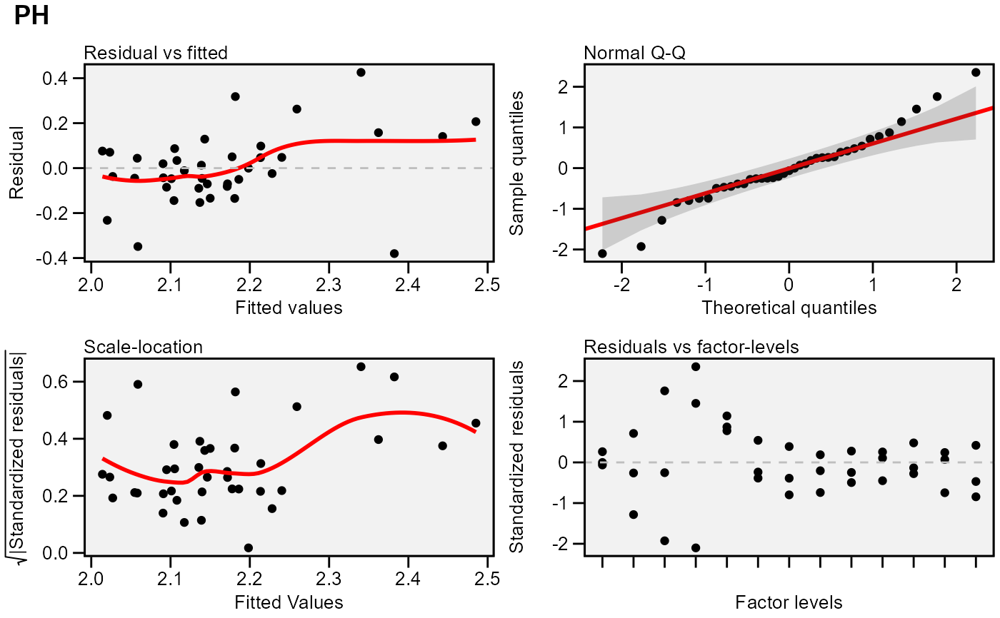

Residual plots for a output model of class gamem. Six types of plots
are produced: (1) Residuals vs fitted, (2) normal Q-Q plot for the residuals,
(3) scale-location plot (standardized residuals vs Fitted Values), (4)
standardized residuals vs Factor-levels, (5) Histogram of raw residuals and
(6) standardized residuals vs observation order. For a waasb object,
normal Q-Q plot for random effects may also be obtained declaring type
= 're'
# S3 method for gamem plot( x, var = 1, type = "res", conf = 0.95, out = "print", labels = FALSE, plot_theme = theme_metan(), alpha = 0.2, fill.hist = "gray", col.hist = "black", col.point = "black", col.line = "red", col.lab.out = "red", size.lab.out = 2.5, size.tex.lab = 10, size.shape = 1.5, bins = 30, which = c(1:4), ncol = NULL, nrow = NULL, ... )
| x | An object of class |
|---|---|
| var | The variable to plot. Defaults to |
| type | If |
| conf | Level of confidence interval to use in the Q-Q plot (0.95 by default). |
| out | How the output is returned. Must be one of the 'print' (default) or 'return'. |
| labels | Logical argument. If |
| plot_theme | The graphical theme of the plot. Default is
|
| alpha | The transparency of confidence band in the Q-Q plot. Must be a number between 0 (opaque) and 1 (full transparency). |
| fill.hist | The color to fill the histogram. Default is 'gray'. |
| col.hist | The color of the border of the the histogram. Default is 'black'. |
| col.point | The color of the points in the graphic. Default is 'black'. |
| col.line | The color of the lines in the graphic. Default is 'red'. |
| col.lab.out | The color of the labels for the 'outlying' points. |
| size.lab.out | The size of the labels for the 'outlying' points. |
| size.tex.lab | The size of the text in axis text and labels. |
| size.shape | The size of the shape in the plots. |
| bins | The number of bins to use in the histogram. Default is 30. |
| which | Which graphics should be plotted. Default is |
| ncol, nrow | The number of columns and rows of the plot pannel. Defaults
to |
| ... | Additional arguments passed on to the function
|
#> Model: Y ~ REP + (1 | GEN) #> --------------------------------------------------------------------------- #> P-values for Likelihood Ratio Test of the analyzed traits #> --------------------------------------------------------------------------- #> model PH #> Complete NA #> Genotype 0.051 #> --------------------------------------------------------------------------- #> Variables with nonsignificant Genotype effect #> PH #> ---------------------------------------------------------------------------plot(model)#>#># }